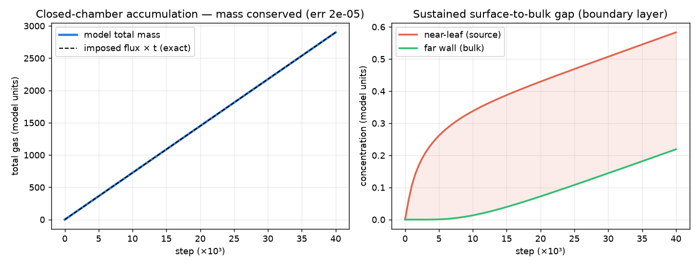
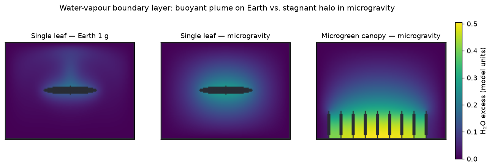
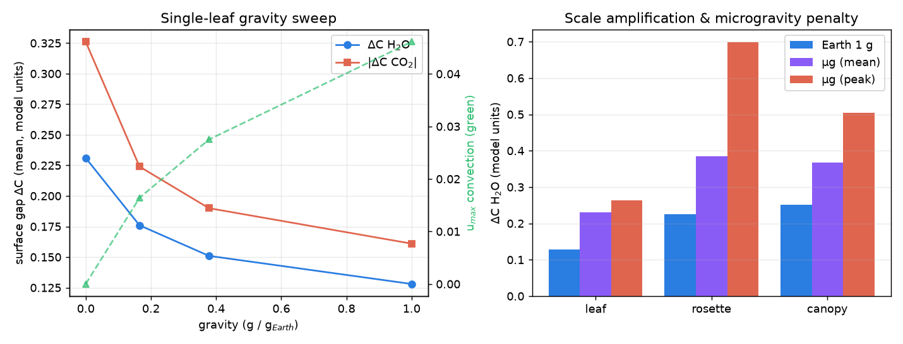
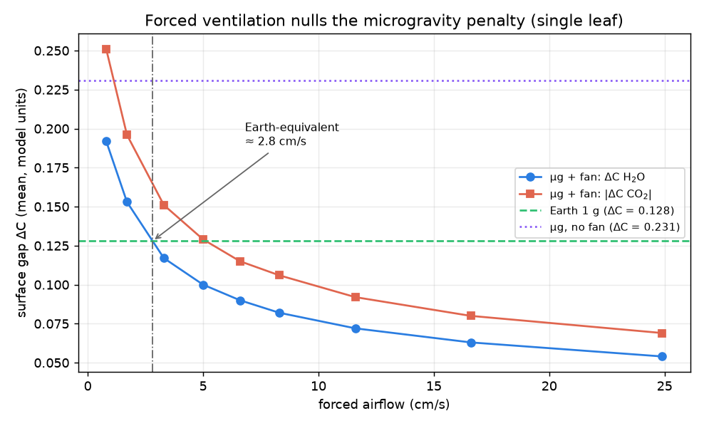
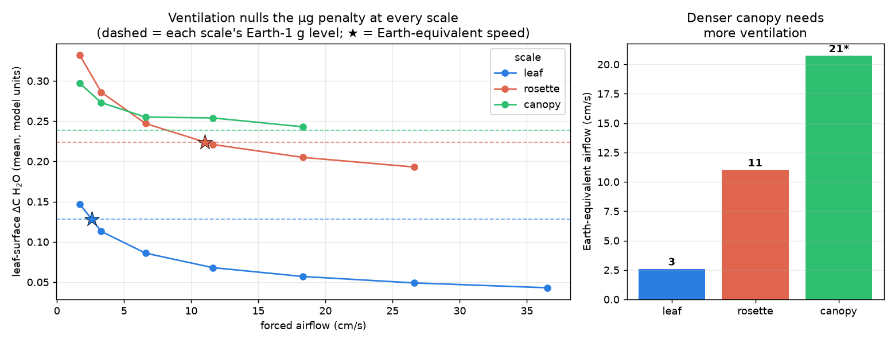
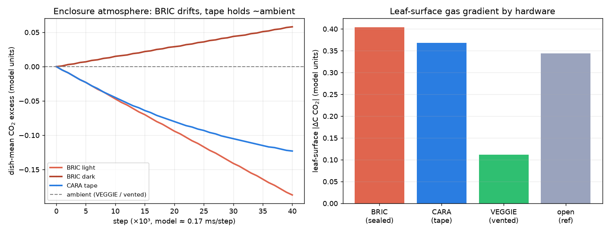
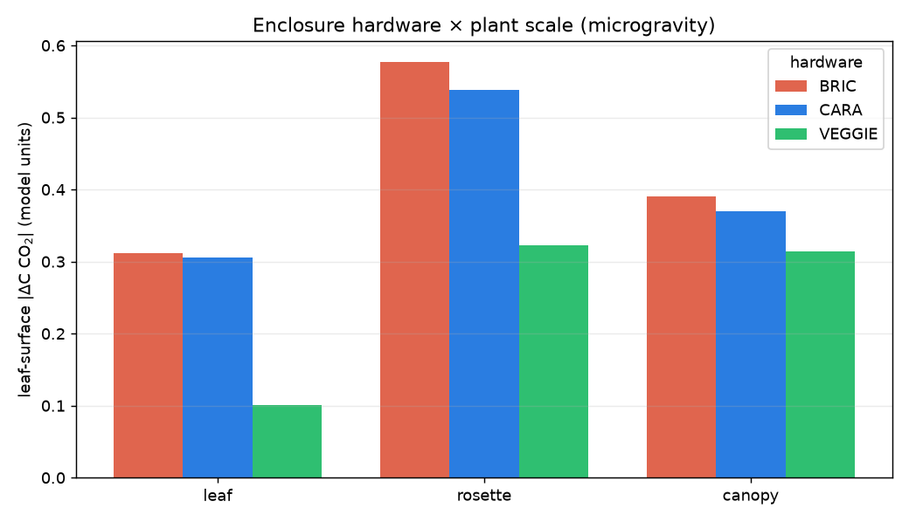
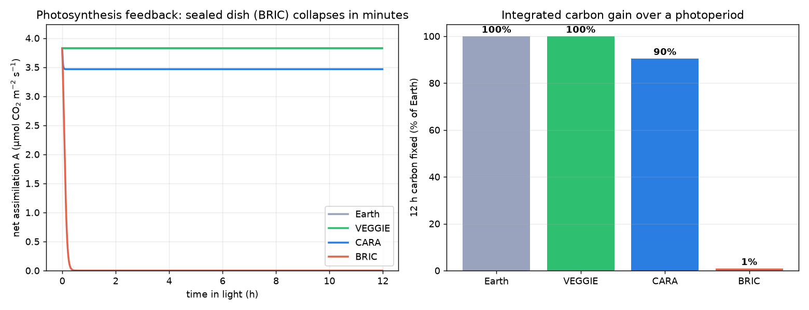
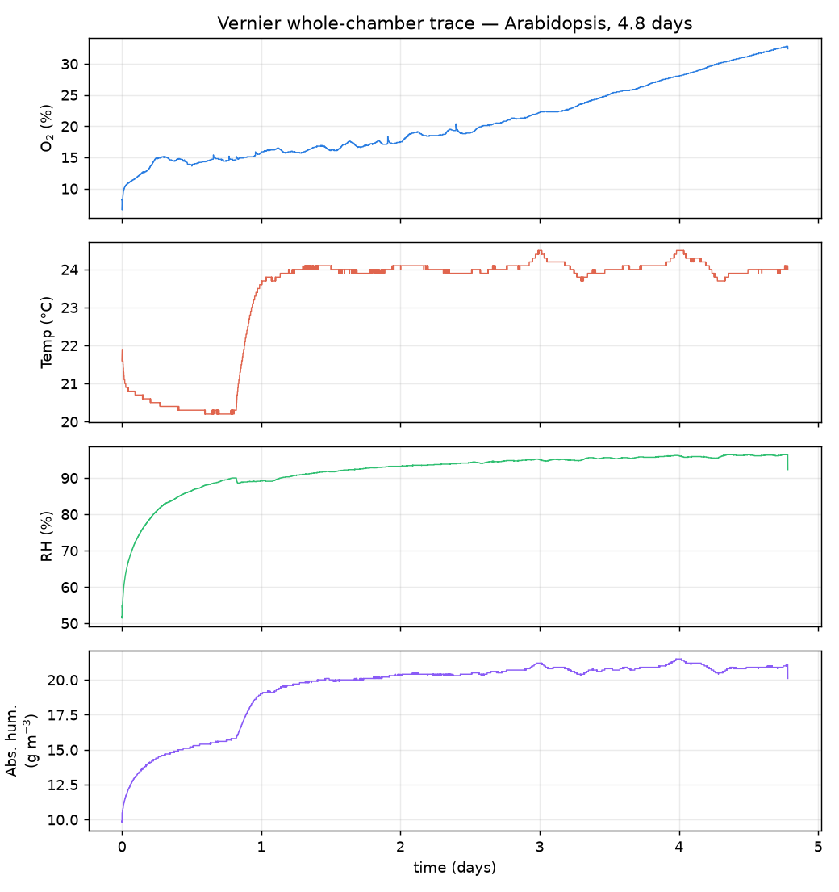

01Overview
Plants grown in spaceflight show stress phenotypes whose mechanistic basis is debated. A long-suspected contributor is the loss of buoyancy-driven convection in microgravity, which should thicken the unstirred boundary layer around plant organs and steepen the gas gradients that govern exchange — but no whole-chamber sensor resolves the sub-millimetre boundary layer. We test the idea with a browser-based lattice-Boltzmann model that solves incompressible flow, multi-species (CO2/O2/H2O) advection–diffusion and Boussinesq buoyancy under an adjustable gravity vector. The solver is validated against four textbook benchmarks and anchored to measured Arabidopsis whole-plant-chamber gas exchange (net assimilation 3.85 µmol CO2 m−2 s−1). We separate what the data validate (flux magnitude, closed-chamber transport) from what the model predicts (the spatial, gravity- and scale-dependent gradients).
02Key findings
03A trustworthy solver, anchored to real data
Before any biology, the solver reproduces four independent benchmarks; setting g = 0 then genuinely collapses convection to the diffusion limit.
| Gate | Benchmark | Reference | Model |
|---|---|---|---|
| 1 | Lid-driven cavity, Re 100 | Ghia et al. (1982) | L2 = 0.011 ✓ |
| 2 | Cylinder wake, Re 100 | Kármán shedding | St = 0.192 ✓ |
| 3 | Natural convection, Ra 10⁴ | de Vahl Davis (1983), Nu = 2.238 | Nu = 2.242 ✓ |
| 4 | Pure diffusion | ½·erfc analytic | L2 ≈ 0 ✓ |

04Gravity thickens the boundary layer — geometry amplifies it
As gravity falls, the buoyant plume that ventilates the leaf on Earth disappears and a thicker, symmetric diffusive halo forms; the surface gas gaps steepen. Denser architectures trap air and make it worse: the rosette crown shows the steepest local gradients, a microgreen canopy the highest bulk gradient.


05Forced airflow reverses it — but the requirement scales with density
Because the penalty is transport-limited, it is engineerable: a fan substitutes for the missing buoyant convection. An isolated leaf needs only ≈ 2.6 cm/s, but a rosette needs ≈ 11 and a dense canopy ≈ 21 cm/s — an ~8× increase. A single ventilation setting tuned on sparse plants under-serves a canopy.


06Spaceflight hardware as boundary conditions
The three most-used ISS plant systems differ, in transport terms, only in the boundary condition they impose on the Petri dish. BRIC (hermetically sealed) drifts toward hypoxia and gives the steepest surface gradient; CARA (gas-permeable micropore tape) vents the enclosure near ambient but leaves the µg boundary layer intact; VEGGIE (forced airflow) fixes both. Across all three scales, one VEGGIE fan speed that restores a leaf barely helps a rosette or canopy.


07From transport physics to carbon gain
Closing the loop with CO2-limited photosynthesis, the boundary-layer depletion self-suppresses assimilation (most in the trapped rosette crown). Over a 12-h photoperiod the consequence is stark: a sealed BRIC dish exhausts its CO2 within minutes and fixes only ≈ 1% of the Earth carbon, while a taped CARA dish sustains ≈ 90% and a ventilated VEGGIE system ≈ 100%. A plant in a sealed, microgravity enclosure is not just stressed at its surface — it is starved of carbon substrate.

This dovetails with a transcriptome meta-analysis of 15 Arabidopsis spaceflight experiments (Barker et al., npj Microgravity 2023), which found flight hardware and lighting among the largest confounding effects and hypoxia/oxidative-stress signatures among the conserved responses — the model supplies a physical mechanism for that hardware dependence.
08Measured gas exchange
The model's stomatal flux is fixed by measurement, not assumed: a whole-plant-chamber dataset and an independent Vernier chamber trace over 4.8 days that shows the expected diel O2/humidity cycling.

09Read, run & reuse
10Cite
github.com/dr-richard-barker/LunarLeaf-CFD — see CITATION.cff.
Manuscript author list, affiliations and a Zenodo DOI are being finalised.